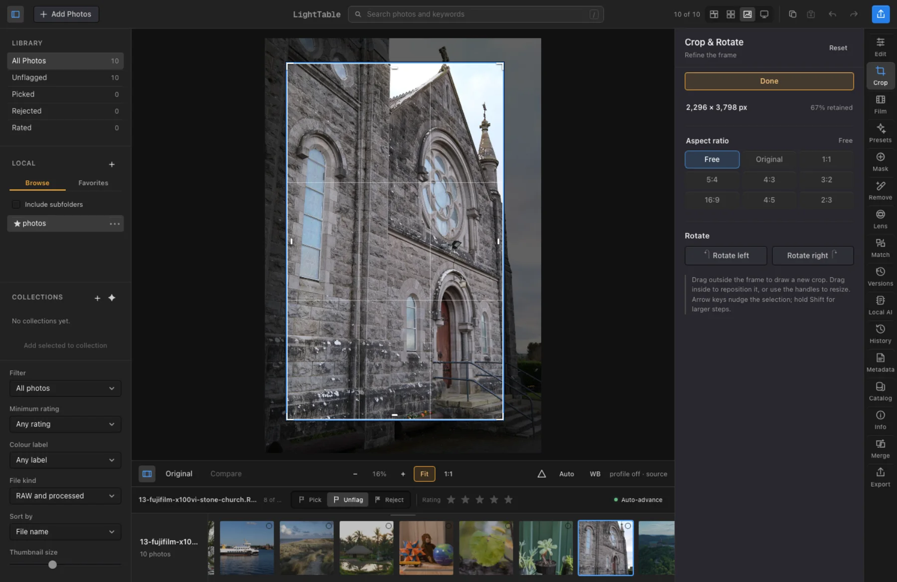
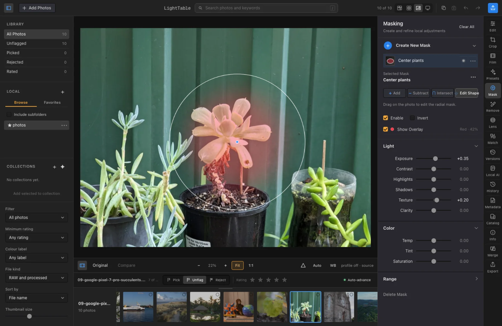
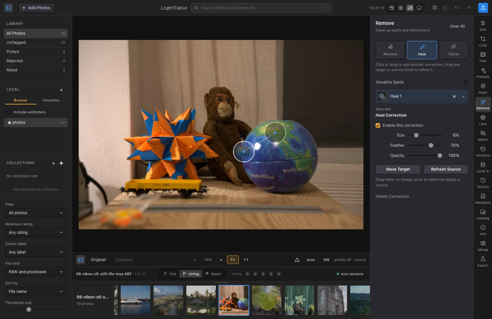
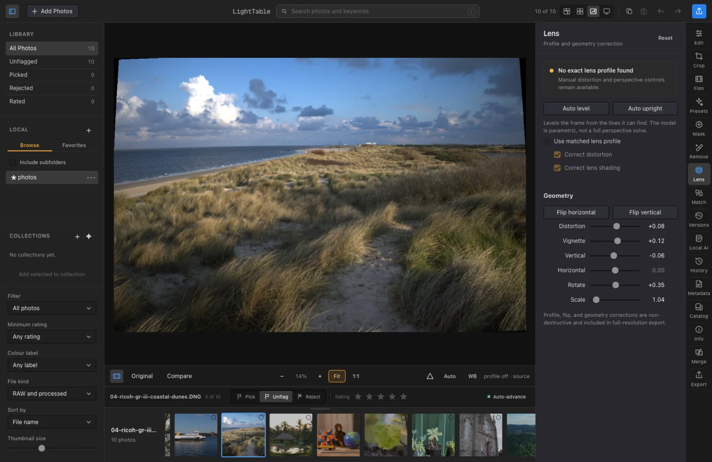
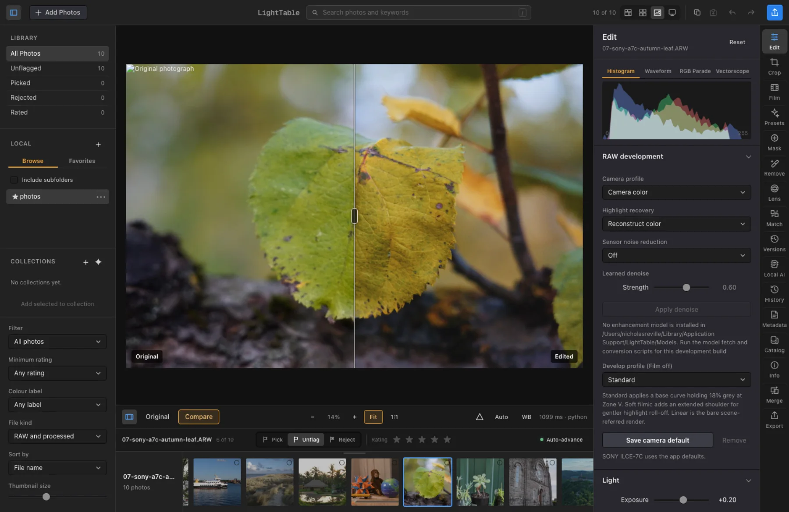
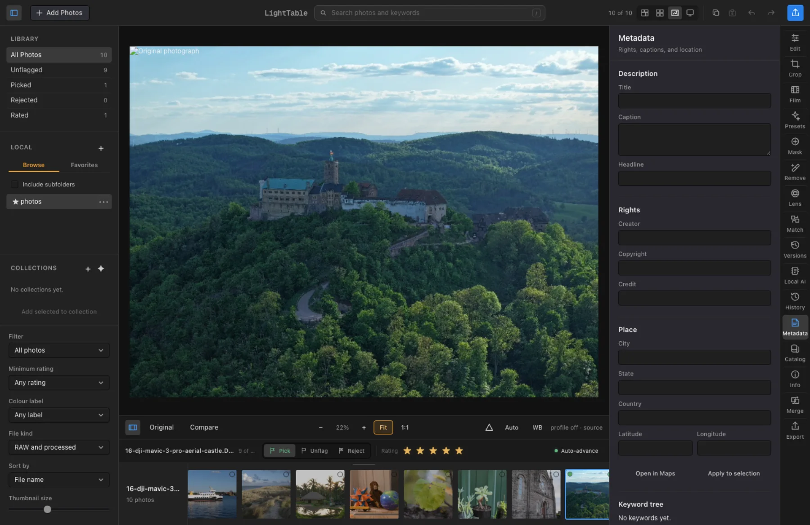
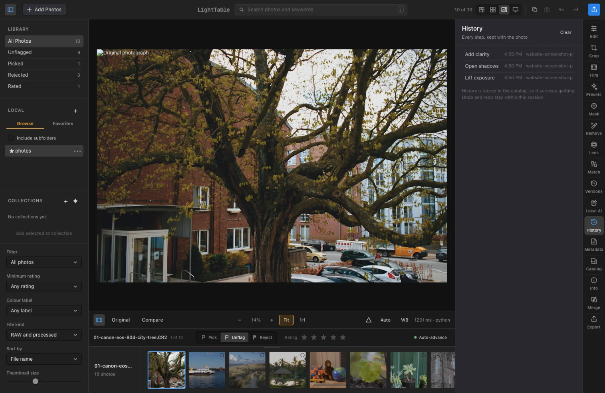
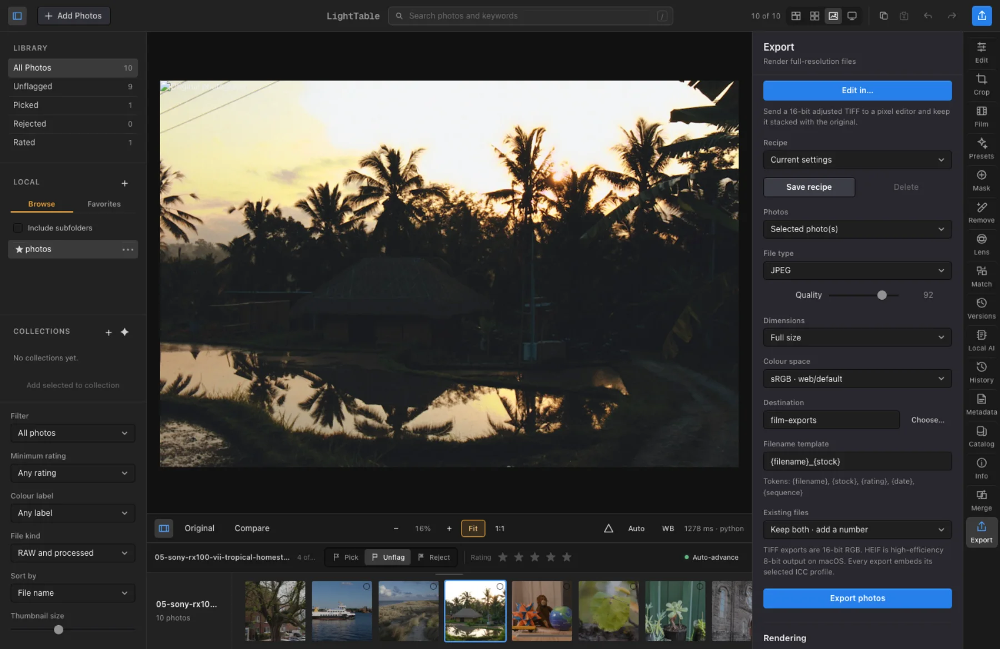

← Back to LightTable
LightTable screenshots
Ten views of the real LightTable interface, each captured with a different photograph from LightTable’s CC0 test collection.
 Film workspace
Stock response, film format, print process, and finishing effects
Film workspace
Stock response, film format, print process, and finishing effects
 Editing workspace
Fast, local, non-destructive light and color controls
Editing workspace
Fast, local, non-destructive light and color controls

Crop & rotate
On-image crop handles, aspect ratios, rotation, and reversible framing

Local masks
Geometric, brush, subject, sky, object, depth, and people-aware selections

Remove distractions
Remove, heal, and clone corrections stay editable on the photograph

Lens & geometry
Profile correction, auto level, perspective, rotation, and scale

Original vs. edited
A draggable split compares the source with the complete edit

Photo info & keywords
Ratings, flags, keywords, EXIF, and render provenance in one place

Non-destructive history
Every adjustment is recorded with the photograph and remains reversible

Full-resolution export
Reusable recipes, color spaces, sizing, file naming, and collision handling